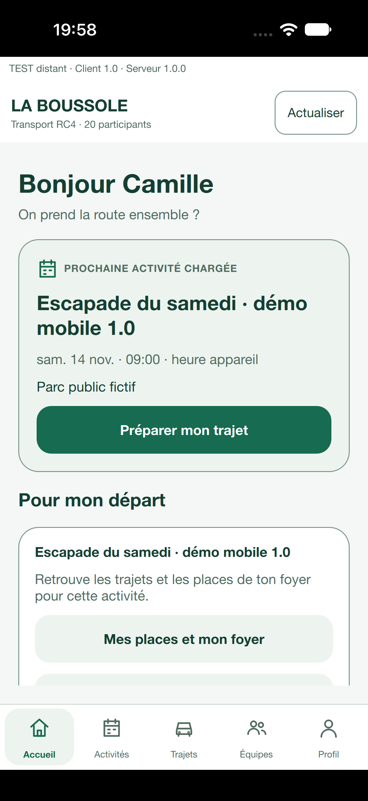
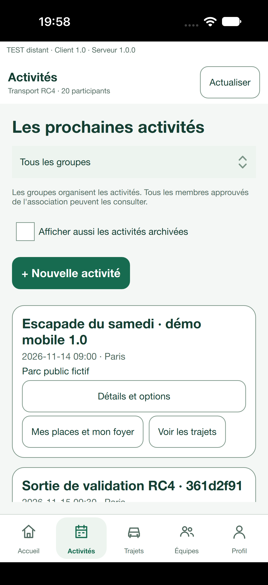
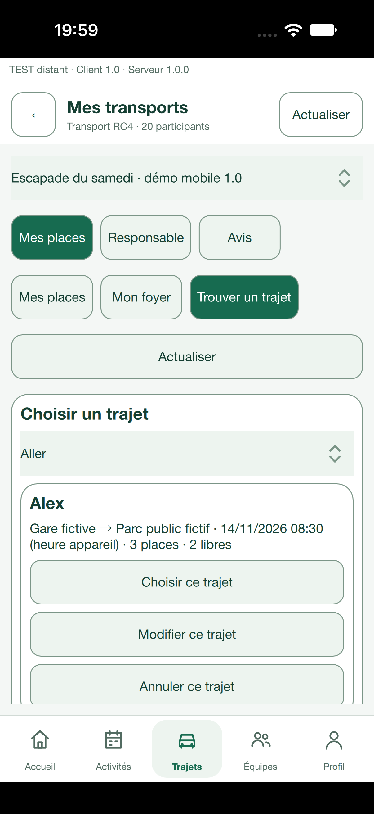
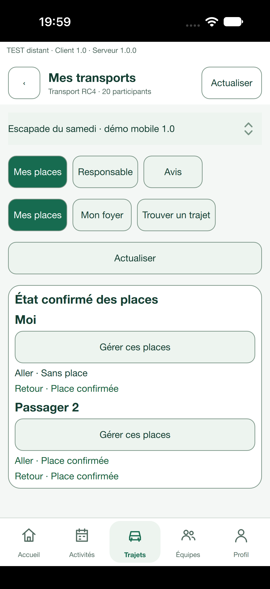
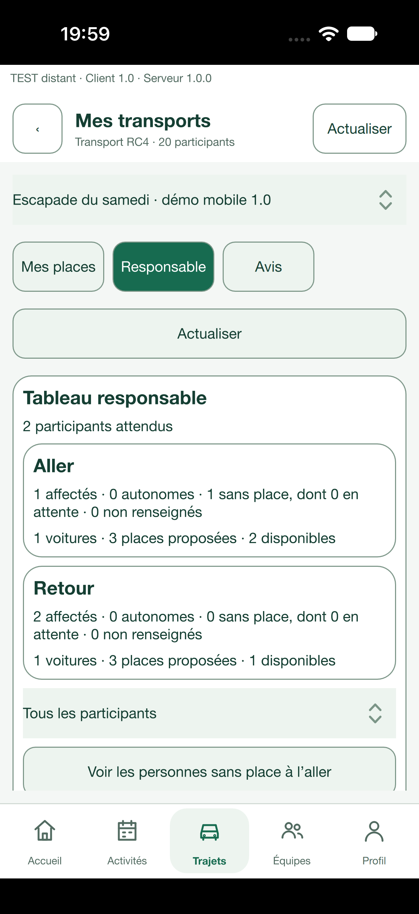

Un foyer.
Deux appareils, un même état.
Dans l’application iOS, un foyer fictif réserve deux places à l’aller et deux au retour. L’annulation de sa seule place aller depuis Android est ensuite retrouvée sur iOS : une place aller et les deux places retour restent confirmées.
Dans la poche.
Au plus près du départ.
Une interface mobile dédiée en Qt 6 et QML, avec la logique métier commune aux applications ordinateur. Cinq destinations, des cartes tactiles et des formulaires adaptés au téléphone.
Ces cinq captures proviennent de l’application 1.0 installée sur un simulateur iPhone 18 Pro sous iOS 27.2, build 10006. Elles n’ont pas été redessinées. Les noms et lieux sont fictifs ; les mentions RC4 dans l’association sont des noms de jeu d’essai, pas la version du produit.


Le prochain départ, d’abord.
Retrouver la prochaine activité parmi les dates chargées, puis accéder aux trajets et aux places du foyer.
Capture authentique · iPhone 18 Pro simulé · iOS 27.2 · build 10006 · données fictives.

Une activité. Les informations utiles.
Consulter la date et le lieu public, ouvrir les trajets, puis afficher les options de l’activité quand elles sont nécessaires.
Capture authentique · iPhone 18 Pro simulé · iOS 27.2 · build 10006 · données fictives.

Une place pour le bon sens.
Distinguer aller, retour, disponibilité et confirmation. Une demande en attente ne devient pas une place confirmée sans réponse du serveur.
Capture authentique · iPhone 18 Pro simulé · iOS 27.2 · build 10006 · données fictives.

Chaque passager a son parcours.
Déclarer les besoins aller et retour de chaque personne, choisir les places à réserver et annuler seulement la personne ou le sens concerné.
Capture authentique · iPhone 18 Pro simulé · iOS 27.2 · build 10006 · données fictives.

Voir les besoins qui restent.
Consulter une synthèse réservée aux responsables, distinguer les personnes sans place et celles en attente, puis retrouver les détails utiles.
Capture authentique · iPhone 18 Pro simulé · iOS 27.2 · build 10006 · données fictives.L’application conserve la version 1.0. Les exemples utilisent des personnes et des lieux fictifs. Aucune disponibilité permanente, validation de tous les téléphones ou conformité réglementaire finale n’est annoncée.
Repère précédent : le parcours Mac 1.0
Le scénario Mac du 12 novembre 2026 concerne le build 10005, code a3a9ee5, installé depuis son DMG privé. Après confirmation du serveur, le responsable retrouve une place aller et deux places retour confirmées. Une lecture indépendante du serveur donne les mêmes résultats. La capacité reste de trois places par voiture.
| Sens | Places confirmées | Sans place | Places disponibles |
|---|---|---|---|
| Aller | 1 | 1 | 2 |
| Retour | 2 | 0 | 1 |

Chaque plateforme a sa portée
Le parcours croisé de réservation et d’annulation partielle est vérifié entre le simulateur iOS et l’émulateur Android. Le balayage iOS a également fonctionné dans le simulateur. Sur Android, les actions et le déplacement par focus ont été exercés, mais le balayage n’est pas validé. Le parcours complet du nouveau build sur des téléphones physiques reste à vérifier. Le parcours Mac ci-dessus est un repère du build 10005. Windows 1.0 n’a pas été construit, faute de quota gratuit suffisant.
La fréquence d’affichage de 60 images par seconde n’est pas démontrée. Les durées de conservation et les documents de confidentialité restent à finaliser avant toute utilisation avec des données réelles. La simulation du navigateur reste distincte de l’application native. Les offres à 19 € et 49 € par mois et par association sont indicatives ; aucun paiement ni inscription publique n’est activé.